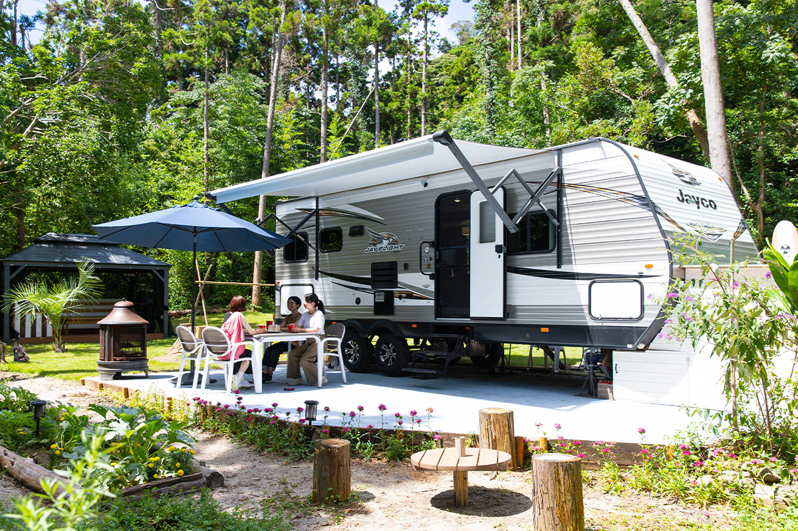
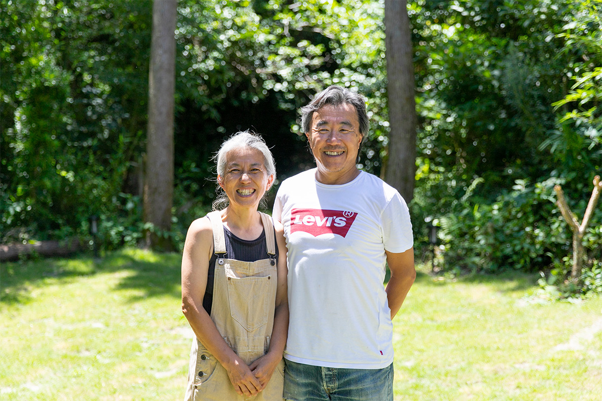
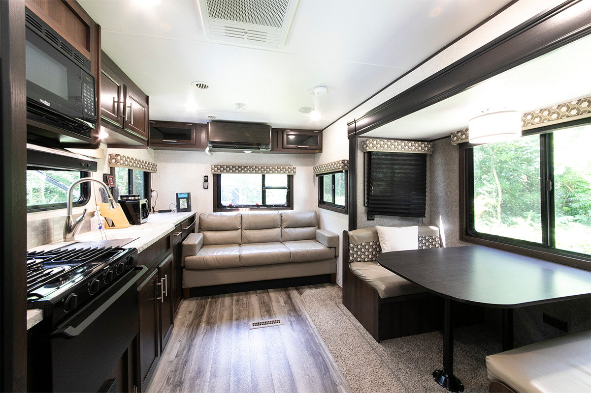
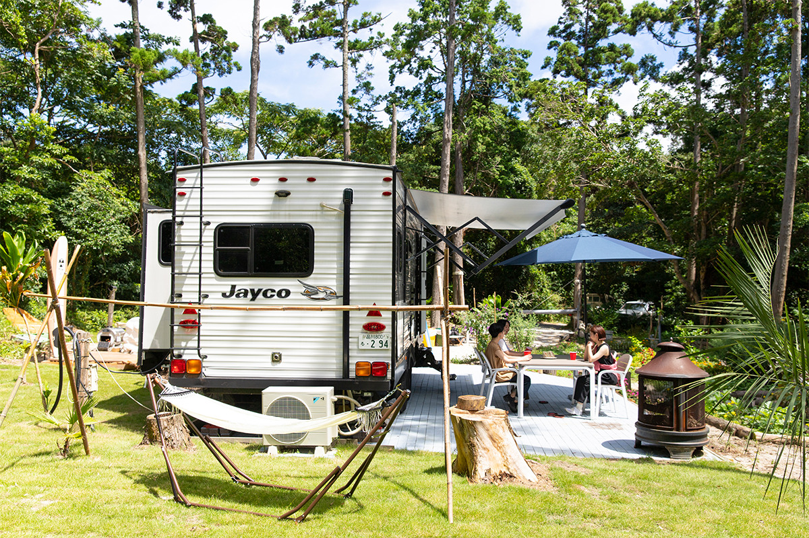
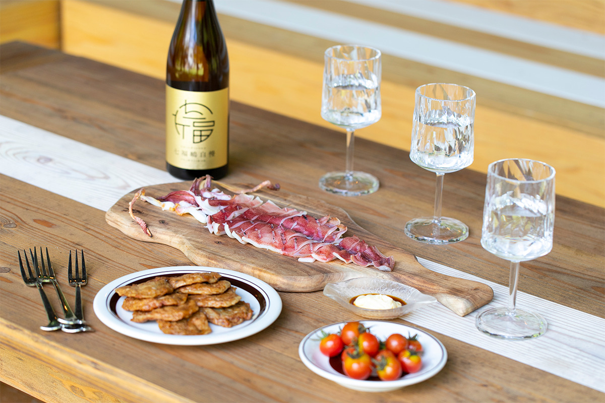
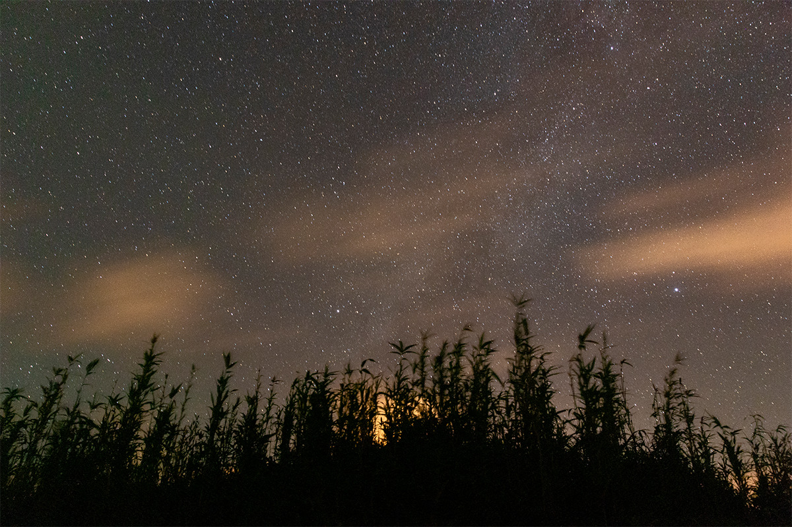
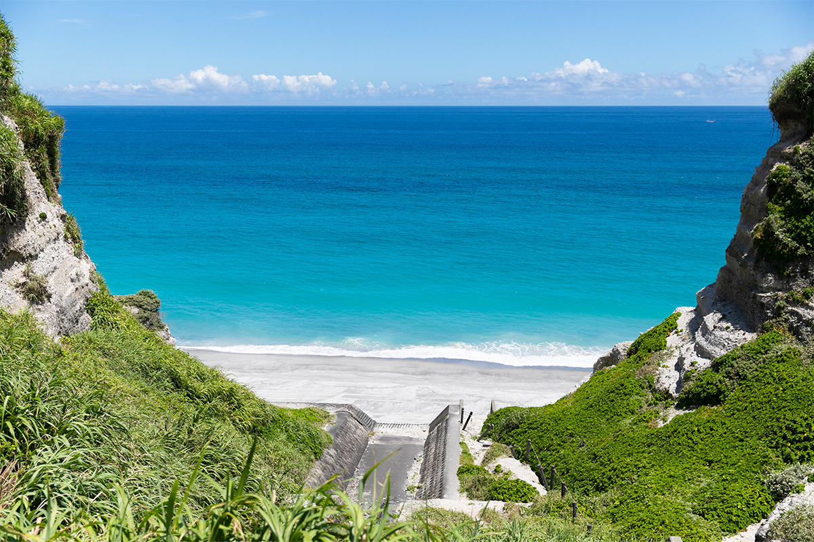

Токио · остров Ниидзима · где остановиться
Ниидзима: дом на колёсах в лесу, грядки и звёзды над открытой ванной

Чтобы попасть к синему морю и белому песку, не обязательно брать долгий отпуск и лететь на курорт за границу. Остров Ниидзима тоже Токио, и сюда можно сорваться хоть завтра, чтобы пожить в доме на колёсах посреди леса.
Остров
Токио, который не похож на Токио
Для большинства, будь то иностранные туристы или сами жители столицы, Токио означает прежде всего мегаполис: лес высоток и толпы на перекрёстках. Это правда, но лишь наполовину. Стоит немного отъехать от центра, в район Тама или на острова, и начинается совсем другая столица: прозрачные реки и море, растения и животные, которые больше нигде не встречаются.
На этой природе строит свою программу проект Nature Tokyo Experience, который поддерживают правительство Токио и Токийское бюро конгрессов и туризма. Его задача в том, чтобы горожанин, у которого всегда мало времени, мог отдохнуть на природе, не уезжая из Токио. Одним из образцовых проектов программы выбрали гостевой дом Niijima Villa на острове Ниидзима.
Синее море и белые пляжи Ниидзимы таковы, что остров легко принять за заграничный курорт.
Дом
Участок, отвоёванный у леса
«Хотелось, чтобы гости почувствовали, какая это роскошь: ничего не делать»
хозяйка Niijima Villa
Niijima Villa принимает одну компанию в день, а живут гости в доме-трейлере. Хозяйка вместе с мужем и помощниками около трёх лет расчищала участок в 1400 квадратных метров, где прежде рос криптомериевый лес. На участке появились беседка, огород и открытая ванна под небом, а в 2022 году готовилась и сауна. Можно взять гамак и читать, можно собирать овощи, можно просто отдыхать и приходить в себя: распорядок каждый выбирает сам.

В трейлере есть всё для жизни: кухня, обеденный стол, душ, туалет и кровати.

Рядом с трейлером огород, где растут кабачки и баклажаны, а в теплице в пяти минутах ходьбы созревают черри и огурцы. Если урожай поспел, гости собирают его сами, сколько хотят.

Ужин
Овощи с грядки и рыба острова
С ужином всё просто. Для тех, кто живёт в Niijima Villa, можно заказать доставку местных морепродуктов, например кальмара «акаика». Овощи и выпивку легко докупить в ближайшем супермаркете, и ужин превращается в барбекю.
К овощам прямо с грядки стоит добавить то, что есть только здесь. Это «татаки-агэ», жареные лепёшки из фарша сине-полосатой ставриды «ао-муроадзи», известное блюдо Ниидзимы, и сётю из сладкого картофеля «америка-имо», который выращивают на острове.

Вечер
Звёзды и пляж, который зовут секретным
На острове главное это виды. Вечером в открытой ванне стоит поднять голову: кроны деревьев обрамляют небо, полное звёзд, словно рама картину. Если совпадёт время, хозяева сами покажут гостям любимые места острова.

Обязательно попросите показать место, которое на острове так и называют: «Секрет». Узкий спуск ведёт между белыми скалами к пустому пляжу и бирюзовому морю.
«Все, кто впервые приезжает на остров, так радуются, что этот вид хочется показывать снова и снова»
хозяйка Niijima Villa

В 2022 году ночь для двоих стоила от 30 000 иен с налогом и сервисным сбором. Ужин и завтрак можно заказать отдельно: набор для барбекю с мясом или рыбой и набор для завтрака.
Niijima Villa
- Адрес
- столичный округ Токио, деревня Ниидзима, Хонсон, 5-1-11
- Телефон
- +81 4992-5-1331
- Номера
- дом-трейлер, одна компания в день
- Цены / Вход
- от 30 000 иен за ночь для двоих (с налогом и сервисным сбором), питание (набор для барбекю с мясом или рыбой, набор для завтрака) за отдельную плату
Как добраться на Ниидзиму
- Как добраться
- самолётом: от станции Токио до станции Митака около 30 минут, оттуда на такси около 15 минут до аэродрома Тёфу, полёт до аэропорта Ниидзимы около 40 минут; морем: от станции Токио до станции Хамамацутё около 7 минут, пешком около 10 минут до пассажирского терминала Такэсиба, скоростным судном до порта Ниидзимы около 2 ч 20 мин (данные 2022 года)
Фото: Ямато Нонака.